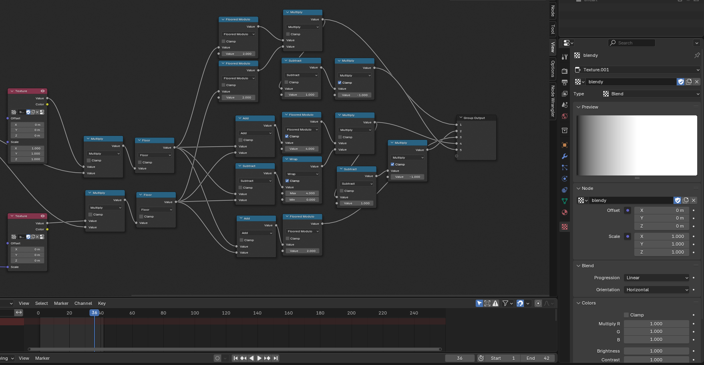

date:wed 2025-04-30
المنشور ده كان المفروض ينزل من شهرين تقريبا, بس وصت الجامعة, و فرمتة الكمبيوتر و تضييع الملف الاصلي و عملو من الاول و جديد اتشغلت و رميت الموضوع علي جمب. بس "اربعاء تحديث المواقع" الشباب علي أجورا عملينه حفزني ارجعله.
انا مش بخبي تفضيلي لاللعاب الكمبيوتر القديمة, خصوصا من التسعينات و الثمانينات الفترة دي, و من كام شهر اتعرفت علي جهاز اسمه إن أي سي pc9800, جهاز كمبيوتر ياباني من شركة NEC موجه لرجال الاعمال, لإحتوائه علي رقاقة مخصصة لرسم الكانجي(الحروف اليابانية) بشكل سريع. ده, مع كونه منصة مفتوحة اي حد ممكن يعملها برامج, خلا العاب القصص البصرية(visual novel) منتشرة عليه عشان خفيفة و سهلة و اغلب محتواها كتابة. ده خلق البيئة لتوجه فني سحرني, مزيج من الرسمات المبكسلة المفصلة بتاعت العاب الكمبيوتر القديمة و التوجه الفني بتاع الانمي. جوردان ممل عمل صفحة بيعرض فيها امثلة جميلة للتوجه الفني البوصفه , و هو نوعا ما السبب اني عملت المنشور ده, عزت اشوف لو اقدر اعمل نفس التوجه في بلندر, و تحديدا في الكومبوز لاسباب شرحتها في منشوري الفات.
في التظليل و عمل شكل اللجب بنيت علي مقالة "Pixel Perfect Dithering Shader in Blender" لكيني بانج, لولا ان كان فيها مشكلتين. الاولي هي اعتمادها المتجه(vector) و احداثيات التكستش(texture coordinate), و التنين دولي مش موجودي في الكومبوس, فلازملهم بدايل.
